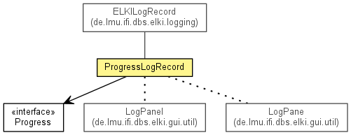

de.lmu.ifi.dbs.elki.logging.progress
Class ProgressLogRecord
java.lang.Object
 java.util.logging.LogRecord
de.lmu.ifi.dbs.elki.logging.ELKILogRecord
de.lmu.ifi.dbs.elki.logging.progress.ProgressLogRecord
java.util.logging.LogRecord
de.lmu.ifi.dbs.elki.logging.ELKILogRecord
de.lmu.ifi.dbs.elki.logging.progress.ProgressLogRecord
- All Implemented Interfaces:
- Serializable
public class ProgressLogRecord
- extends ELKILogRecord

Log record for progress messages.
- See Also:
- Serialized Form
| Methods inherited from class java.util.logging.LogRecord |
getLevel, getLoggerName, getMessage, getMillis, getParameters, getResourceBundle, getResourceBundleName, getSequenceNumber, getThreadID, getThrown, setLevel, setLoggerName, setMessage, setMillis, setParameters, setResourceBundle, setResourceBundleName, setSequenceNumber, setThreadID, setThrown |
| Methods inherited from class java.lang.Object |
clone, equals, finalize, getClass, hashCode, notify, notifyAll, toString, wait, wait, wait |
serialVersionUID
private static final long serialVersionUID
- Serial version
- See Also:
- Constant Field Values
progress
private final Progress progress
- Progress storage
ProgressLogRecord
public ProgressLogRecord(Level level,
Progress progress)
- Constructor for progress log messages.
- Parameters:
level - Logging levelprogress - Progress to log
getProgress
public Progress getProgress()
- Get the objects progress.
- Returns:
- the progress